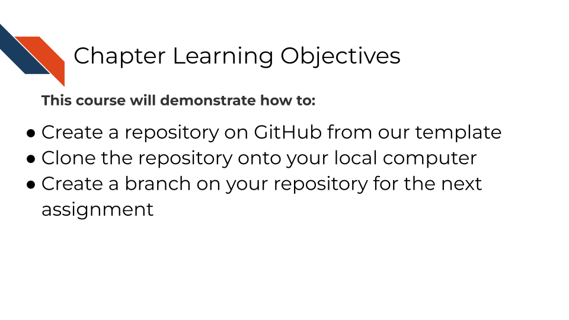

Chapter 2 Setting up for this course

2.1 Phase 1: Creating Your Repository from Template
You will need to use a template repository on GitHub that we made for this course to have all the necessary pieces.
2.1.1 Step 1: Access the Course Template
Go to github.com and make sure you are logged inNavigate to the course sandbox template repository
green button at the top of the repository page
Important: Do NOT fork the repository - you must use the template option
2.1.2 Step 2: Configure Your New Repository
and select the “Create a new repository” option (if needed). Fill out the repository creation form:
Include all branches: Leave unchecked (we only need the main branch)
Owner: Choose an owner (e.g., your-username, if needed)
Repository name: Choose a meaningful name (e.g., your-username-capstone-sandbox)
Description: Add a brief description of your capstone project
Visibility: Set to Public (required for the automated evaluation system to work)
2.2 Phase 2: Local Setup and Cloning
For this course you may use whatever git client (GitHub Desktop, GitKraken, etc) you are most comfortable with, or no git client at all. If you need a recap on how to file pull requests remember you can return to the other courses in this series for reference, particularly the Advanced Reproducibility course.
2.3 Phase 3: Branch Creation and Workflow
2.3.1 Step 5: Create Your Branch for the Docker Assignment
You may name your working branch whatever you like for each assignment. The examples/instructions use the name docker-assignment for the first example.
Option A: Using GitHub Desktop
Click on the “Current branch” dropdown (shows “main”)
Click “New branch”
Name your branch: docker-assignment
Click “Create branch”
2.4 Phase 4: Completion
2.4.1 Step 6: Collect a workflow URL
Navigate to github.com, specifically your repository/copy of the capstone sandbox.
Navigate to the .github/workflows directory.
Click on one of the workflow files that are present there.
Copy the URL from your web browser for this workflow file.
• The URL will look like: https://github.com/your-username/your-repository-name/blob/main(or-your-branch)/.github/workflows/file_name.yml
If you are taking the course on Coursera:
Submit your Coursera Quiz
Go to your Coursera Graded Assignment (“Setting Up”).
Paste the URL you copied in Step 6.
Submit the quiz to get credit for your work.
2.5 Your Setup is Complete…. What are the Next Steps?
This setup process creates the foundation for the Docker and GitHub Action capstone assignments, which will follow a similar pattern:
Create a branch → Make changes → Commit changes → Push to GitHub → Open a PR → Receive evaluation (→ iterate if needed).
![For each assignment, create a new branch. Then make edits to accomplish the task of the assignment. Optionally you may be able to test those edits locally (e.g., building a docker image locally). Git commit and push those edits and open a pull request (or check an existing pull request) to receive evaluation from automated assignment checks. Interpret the results. If you were not successful, troubleshoot and iterate this process as needed, checking your pre-existing pull request for new evaluation results after making additional changes. Or if you were successful in your assignment, submit the verification code to your coursera quiz (or move on to the next section if you are not using coursera or some certification method to take this course)](02-setting-up_files/figure-html/1ExTZsKDHKM0fIi0_tB80qd8cHvqjEDyNJp-OsnvZ19o_g368818bb4f3_0_353.png)
The automated evaluation system depends on this workflow, so following these steps precisely is crucial for getting your validation codes!
Note that the validation codes are really only needed if you are participating in this capstone as a part of the Coursera or Leanpub platforms (for certification). If you are not taking this course for certification, there is no structure in place to verify the validation code you receive.
2.5.1 Reminders of Best Practices for Success while Working with GitHub
- Use one branch per assignment - keeps work organized
- Write descriptive commit messages - helps track your progress
- Regularly push your work - protects your work and enables evaluation
- Use clear titles and descriptions for pull requests - will help you and your collaborators know what the work in the branch is
- Don’t merge your pull request before you get the validation code - outside of this assignment, wait for approval from a team member or collaborator
- Monitor automated feedback - respond to or handle issues identified by evaluation promptly
2.6 Troubleshooting Common Issues
2.6.1 “Repository not found” when cloning:
Check that the repository is public
Verify the URL you’ve copy/pasted is correct
Ensure you have access to the repository